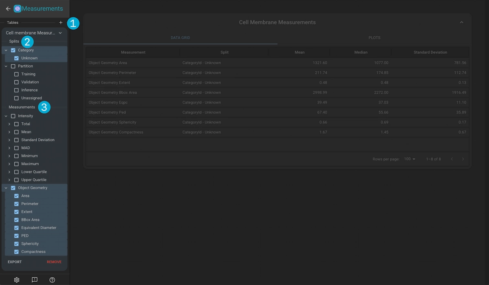
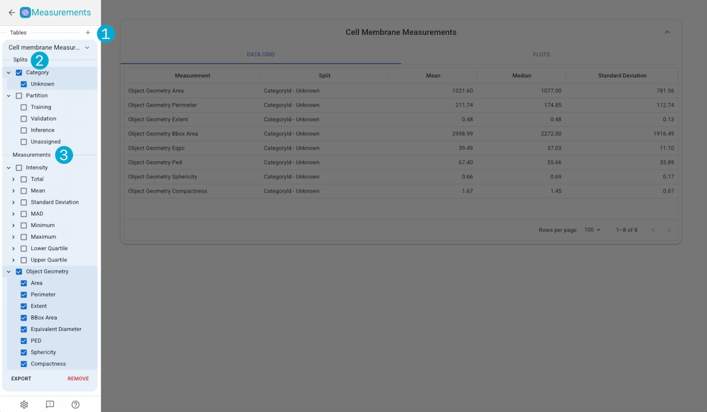
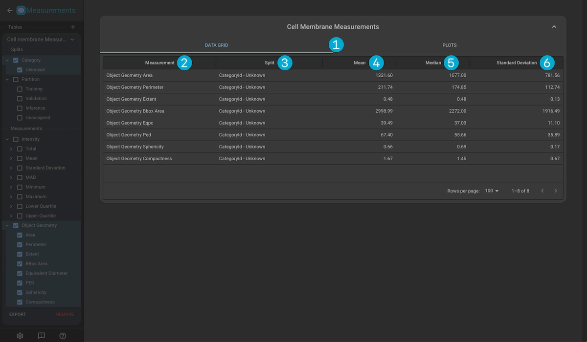
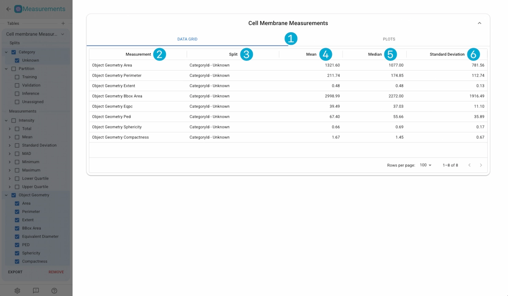
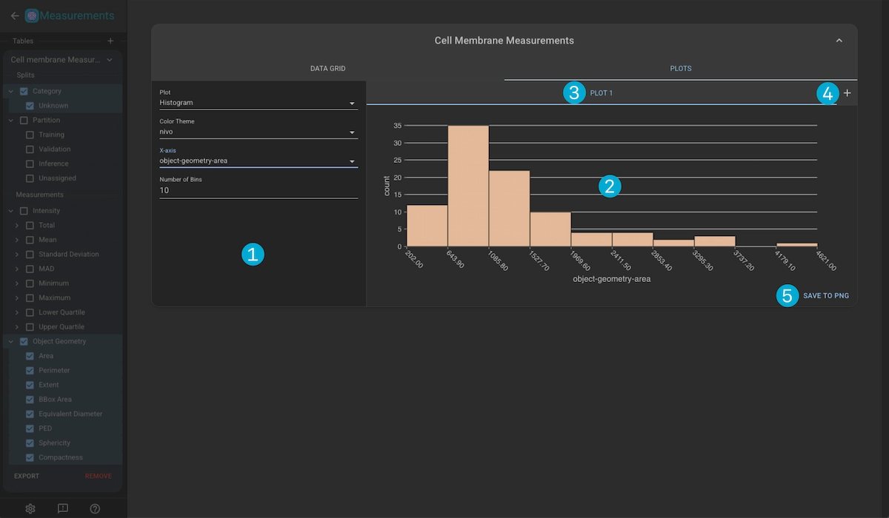
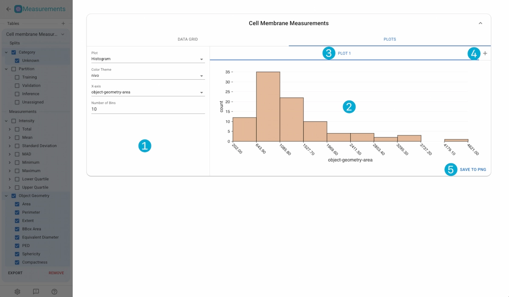

Measurements Viewer#
The annotator in Piximi can quickly create annotations for your multichannel and multiplane images. Below is a showcase of some of the different annotation tools that Piximi offers.
Table Creation and Measurement Selection#


1. Table Creation
Click in the “+” button to create a new measurement group based on one of the Kinds in the project.
2. Split Selection
Select the splits yout want to use for the measurements. The splits dictate how the measurements are grouped for statitical analysis (i.e. calculating the mean intensity over all the imges in the training partition).
3. Measurement Selection
Measurements are separated into two sections; Intensity and Object Geometry.
Intensity Measurements
These measurements are performed for whole images, as well as image crops for annotated objects and include:
Total Intensity: Cummulative sum of the intensity values of each pixel.
Mean Intensity: The mean of the pixel intensities.
Standard Deviation: The std of the pixel intensities.
MAD: The median adjusted deviation of the pixel intensities of the image.
Minimum Intensity: The minimum intensity of the pixels in the image.
Maximum Intensity: The maximum intensity of the pixels in the image.
Lower Quartile: The value of the intensity for which 25% of the pixel intensities are lower.
Upper Quartile: The value of the intensity for which 75% of the pixel intensities are lower.
Object Geometry Measurements
These measurements are perfomres on the object masks, and are not available for the Image Kind.
Area: The area of the annotation mask.
Bounding-Box Area:the area of the annotation’s bounding-box
Perimeter: The perimeter of the annotation mask.
Extent: The ratio of bounding-box area to mask area.
Equivalent Diameter: The diameter of a perfect circle whose area is equivalent to the area of the annotation.
Diameter of Equal Perimeter (PED): The diameter of a circle whose perimeter is equal to that of the annotation’s.
Sphericity: The extent to which an annotation is perfectly spherical. Ranges from 0 (irregularly shaped) to 1 (spherical) = Compactness: The degree to which objects are compact. Circles will be the most compact with a value of 1, with the value increasing with increasing shape irregularity.
Measurements Data Grid#


1. Display Tabs
Switch views between the data grid and the measurement plots.
2. Data Grid
Measurement Name: Name of the measurement.
Split: The split which the measurement results are analysed over.
Mean: The mean values over all the measurement values in the split.
Median: The median values over all the measurement values in the split.
Standard Deviation:The standard deviation over all the measurement values in the split.
Measurements Plots#


1. Plot Controls
Plot Type: The type of plot to use: Histogram, Scatter, Beeswarm
Color Scheme: The color scheme of the plot.
x-Axis: The measurement used for the x-axis.
y-Axis: The measurement used for the y-axis.
Size: The measurement used for the size mapping.
Color: The split type used for color mapping (by-category or by-partition)
Number of Bins: Number of binds to use in the histogram plot.
Swarm Group: The split type used for swarm grouping (by-category or by-partition)
Plot Name |
Color Scheme |
x-Axis |
y-Axis |
Size |
Color |
Num. Bins |
Swarm Group |
|---|---|---|---|---|---|---|---|
Histogram |
Configurable |
Configurable |
N/A |
N/A |
N/A |
Configurable |
N/A |
Scatter |
Configurable |
Configurable |
Configurable |
Configurable |
Configurable |
N/A |
N/A |
Beeswarm |
Configurable |
N/A |
Configurable |
N/A |
N/A |
N/A |
Configurable |
2. Plot Container
Displays the current plot.
3. Plot Tabs
Switch between multiple active plots. Click on the tab title to update the name of the plot, or click on the “X” button to remove the plot.
4. Create New Plot
Create a new plot
5. Save Plot
Save the currently viewd plot as a .png file.